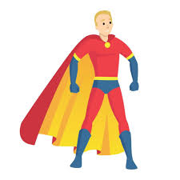
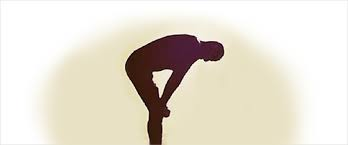

Um heroi estava em busca de um vilão foragido, ele começa a procurar por qual cidade.
Chegando na cidade de Campinas ele encontra o vilão
Em valinhos ele não encontrou o vilão, mas encontrou animais silvestres
ele vai para cima do vilão e acerta seu golpe mais forte.

Eles se resolvem, mas o heroi fica preocupado do que vai acontecer agora que o vilão esta solto
Ele não acha uma boa ideia
O vilão ainda reage
O vilão conseguiu escapar
O heroi tenta outros golpes
Do lado direito ele acha o vilão
ir para cima deleO lado esquerdo não tinha nada
o vilão sobrevive e ativa uma bomba que mata ele e o heroi
escolhendo lado certo